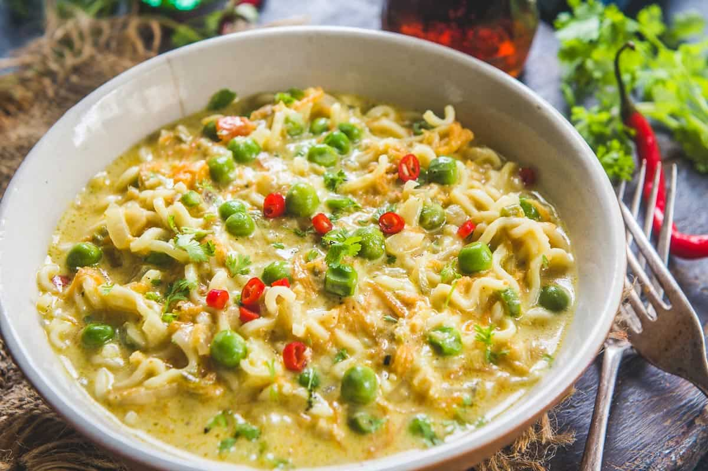

Cheesy Italiano Maggi

Ingredients -
- Maggi
- Olive Olive
- garlic
- Green capsicum
- Red Capsicum
- Cheese Spread
- Basil Leaves
Instruction
-
Prepare ingredients as mentioned in the list.
-
Just heat the oil and fry the garlic for about a minute. Then, toss in the basil leaves and fry them for another minute. Add all the capsicums, sauté for a couple of minutes and switch off the gas. Drop in the cheese spread and mix well.
-
Cook a packet of MAGGI Masala Noodles (As per the instructions on the pack) and when it’s done, lovingly pour the cheese and capsicum over the MAGGI.
-
Serve hot!